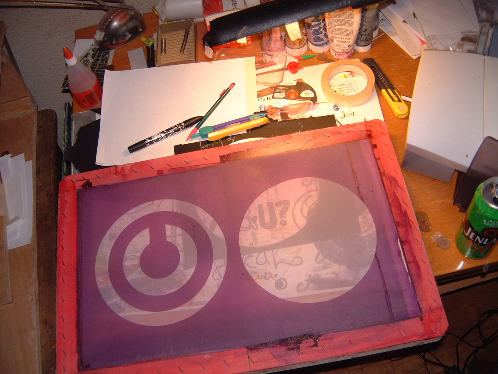
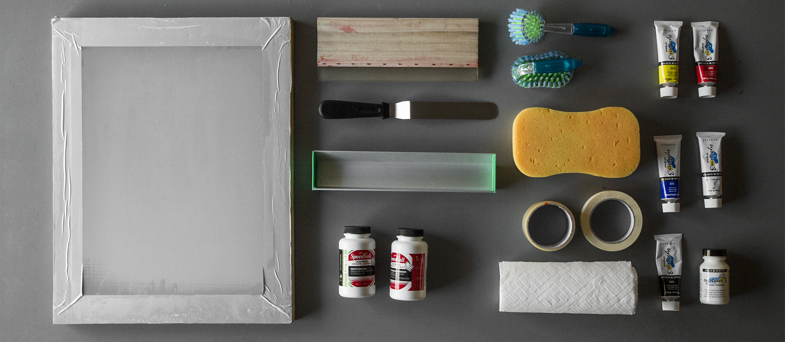
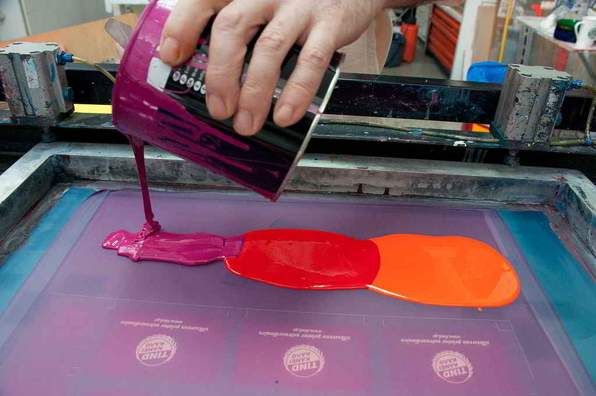

HISTORIA DE LA SERIGRAFIA
Las técnicas serigráficas más antiguas provienen de la cultura oriental. Se estima que las primeras impresiones fueron realizadas por los nativos de las islas Fiyi, en el año 3000 a. C., utilizando hojas de plátano agujereadas para la distribución de las tintas. La historia de la serigrafía data de esta época. La serigrafía es un sistema de impresión milenario. Si bien no hay datos exactos, se cree que se remonta a la antigua China, en la que según una leyenda, se usaban cabellos de mujer entrelazados a los que les pegaba papeles, formando dibujos que luego se laqueaban para que queden impermeables. Posteriormente se cambió el material por la seda, y de ahí proviene su nombre: sericum (seda, en latín) graphe (escribir, en griego). En las cavernas de los Pirineos se han encontrado un centenar de dibujos realizados con esta técnica. Los egipcios emplearon la serigrafía para la decoración de murales y el diseño de interiores de templos y pirámides. En la antigüedad se fabricaban unas calcomanías que se aplicaban en los artículos de uso diario, platos, vasos, etc.[cita requerida] En Europa se utilizó para imprimir telas, en lo que se llamó "impresión a la lionesa", por ser el lugar en donde se aplicaba este sistema. Las primeras serigrafías sobre papel (carteles publicitarios) aparecen en Estados Unidos sobre 1916 con una nota pendiente de concesión. La primera patente concedida es para Selectasine en 1918. Guy Maccoy fue el primero en emplear la técnica de la serigrafía con fines artísticos. Realizó sus dos primeras serigrafías en 1932; ambas eran alrededor de 9 x 11 pulgadas y tiró aproximadamente 40 copias de cada diseño. En 1938 tuvo su primera exposición individual, la primera de serigrafías en una galería. Es en Estados Unidos, y con el auge de la fotografía y los productos químicos, donde toma un impulso espectacular; por ser un método muy versátil para poder imprimir en muchos materiales, hoy en día pueden distinguirse miles de artículos procesados con serigrafía.

Se da crédito al artista Andy Warhol por popularizar la serigrafía como una técnica artística. Las serigrafías de Warhol incluyen su Marilyn Diptych de 1962, que es un retrato de la actriz Marilyn Monroe impreso en colores llamativos. Warhol fue apoyado en su producción por el maestro impresor de pantalla Michel Caza, miembro fundador de Fespa. La hermana Mary Corita Kent ganó fama internacional por sus vibrantes serigrafías durante las décadas de 1960 y 1970. Sus obras eran de color arco iris, contenían palabras que eran a la vez políticas y fomentaban la paz, el amor y el cuidado. El empresario, artista e inventor estadounidense Michael Vasilantone comenzó a usar, desarrollar y vender una máquina rotativa de serigrafía de prendas multicolores en 1960. Vasilantone solicitó más tarde una patente sobre su invención en 1967, concedida el número 3.427.964 el 18 de febrero de 1969.[La máquina original se fabricó para imprimir logotipos e información de equipo en prendas de bolos, pero pronto se dirigió a la nueva moda de la impresión en camisetas. La patente Vasilantone fue licenciada por múltiples fabricantes y la producción resultante y el auge de las camisetas impresas hicieron que esta máquina de serigrafía de prendas de vestir fuera popular. Serigrafía en prendas de vestir actualmente representa más de la mitad de la actividad de serigrafía en los Estados Unidos. La serigrafía gráfica se utiliza ampliamente hoy en día para crear gráficos producidos en masa o lotes grandes, como carteles o stands de exhibición. Las impresiones a todo color se pueden crear imprimiendo en CMYK (cian, magenta, amarillo y negro). La serigrafía se presta bien a la impresión en lienzo. Andy Warhol, Arthur Okamura, Robert Rauschenberg, Roy Lichtenstein, Harry Gottlieb y muchos otros artistas han utilizado la serigrafía como expresión de creatividad y visión artística. Otra variación, la serigrafía híbrida digital, es una unión entre la serigrafía analógica y la impresión digital tradicional directa a prendas de vestir, dos de las tecnologías de embellecimiento textil más comunes en uso hoy en día. Esencialmente, la serigrafía híbrida digital es una prensa de serigrafía automática con una mejora digital CMYK ubicada en una de las estaciones de serigrafía. La serigrafía híbrida digital es capaz de opciones de datos variables, creando infinitas personalizaciones, con la capacidad añadida de técnicas específicas de serigrafía
MATERIAL
Vale decir que una de las razones por la que la seda ha quedado prácticamente en desuso es porque por más que se estire, cuando toma la humedad ambiente, se vuelve a aflojar. Comúnmente se utilizan el poliéster, el nylon o materiales acrílicos. El diámetro de los hilos que constituyen la gasa es uniforme, pero las gasas pueden ser de distintos grosores; para un trabajo con más detalle se prefieren gasas de un tejido más cerrado. Para uso textil, la cantidad de hilos se encuentra entre los 18 y los 90 hilos por cm lineal. Para uso con tintas al solvente (impresiones no textiles) como plásticos, madera, metales u otros materiales, las mallas (sedas) tienen que ser de trama más cerrada, entre 100 y 200 hilos por cm lineal. Para el uso de tintas base agua se recomienda una cantidad de hilos de 34 hasta 62 hilos; en algunos casos, dependiendo de lo diluida que esté la tinta, podremos emplear hasta 90 hilos. El color de las gasas varía entre el blanco y el amarillo; estas últimas permiten obtener una mejor calidad en la copia del original, dado que no refractan la luz. Las sedas pueden ser monofilamento o multifilamento, las "mono" son más resistentes y mantienen el tensado en el marco, otorgándoles una muy buena estabilidad dimensional, diferenciándose de las multifilamento, que son de baja calidad y poca durabilidad. La malla de color amarillo es muy utilizada en serigrafía sobre papel en tramados a partir de 90 hilos. En algunos casos se usan en mallas de 77 hilos y de color amarillo para textil para conseguir una mejor definició
PREPARACION
Durante su preparación, la gasa debe ser unida en forma tensa al marco. La tensión en la gasa es muy importante para obtener buenos resultados. La tensión puede ser irregular dependiendo de la resistencia de la gasa, por ejemplo si la gasa escogida es constituida de hilos más delgados, o si la gasa se monta al marco en forma manual. La tensión sobre la superficie puede ser medida con un instrumento de medición en newton. Una variación usa cilindros de acero inoxidable, con minúsculos poros por donde pasa la tinta, la presión se ejerce con un cilindro metálico alojado en el interior del cilindro de impresión; este modo es empleado en la estampación textil y para fabricar las pistas de los circuitos impresos. Después de un largo proceso de preparación, la seda o tela queda completamente estirada y ordenada dándole forma y regularidad.
